Software Defined Media
シンポジウム2017
2017.07.20（木）| 東京大学 I-REF棟6F
2020年の東京オリンピック・パラリンピックの開催に向けて，世界からの訪問者への高度なおもてなしを目指した社会インフラのスマート化が急がれている．中でも，オリンピックの理念である「スポーツを通して心身を向上させ，さらには文化・国籍など様々な差異を超え，友情，連帯感，フェアプレーの精神をもって理解し合うことで，平和でよりよい世界の実現に貢献する」という目標を支援するため，地球規模での一体感を生み出すような視聴メディアに関する研究開発の重要性が高まっている．そのためには，グローバルなインターネットを前提とした映像・音響の視聴空間と視聴メディアの設計が必要である．
近年は，多くのスマートフォンに標準的に内蔵される収録機器を常時持ち歩くことが増え，収録された映像音声の情報はインターネット上で瞬時に伝達・共有・加工される状況が出来上がった．さらには，収録対象から映像素子に入力されたビットマップ情報と，ステレオマイクに入力された2チャネルの音声情報としてそのまま伝送し，受信側でそのまま再生するだけでなく，空間に存在する収録対象を3次元モデルとして解釈し複数の視聴オブジェクトに分解して伝送し，受信側ではこれらのオブジェクトを用いて空間を再合成するオブジェクト志向の方式が注目を集めている．これにより，ヘッドマウントディスプレイ（HMD），3Dテレビ，立体音響装置などの受信側のシステムの構成に合わせた柔軟な3次元表現が可能となるだけではく，他のコンテンツの視聴オブジェクトを別途受信し組み合わせることで，今までにない表現が可能になる．
例えば，音響においては，Dolby AtmosやDTS:Xなどの映画館やホームシアター，さらには個人向けモバイル機器を対象に，音のオブジェクトから3次元の音場を生成する立体音響システムが登場している．また，映像においては，複数の地点・角度から撮影された映像・動画から，撮影した空間に存在する3次元オブジェクトの抽出が可能であり，抽出した3次元オブジェクト情報を用いて，任意の視点(自由視点)からの映像の作成・再構築が可能となりつつある．
こうしたの流れに目を向けると，今後はインターネットで収録環境と再生環境を双方向で接続し，視聴オブジェクトを交換しながら，3次元表現を持つ情報空間をエッジヘビーコンピューティングまたはクラウドで計算処理することよって，映像音声が作り出されていくことになるであろう．映像と音声のオブジェクト化が融合することで，従来の配布型コンテンツビジネスを超えた，新しい次元のインタラクティブなオリンピック・パラリンピックの視聴形態などこれまでにないビジネス領域や，これまでにないディジタルメディアを用いた表現方法などを開拓・開花させることが期待される．
7月20日（木）に開催するSDMシンポジウムでは，以下の関連トピックスに関して，意見交換を行う．
関連トピックス
オブジェクト視聴メディアとソフトウェア制御
オリンピックに向けた研究開発
インタラクティブメディアとゲーム
新しいメディアデバイス
シネマ・劇場におけるメディア設備とコンテンツ
視聴メディアに関する標準化活動
3Dユーザインターフェイス
放送に関する研究開発
機械学習を利用した時空間情報の解釈と視聴者行動の検知
大容量メディアの分散処理とEdge Heavy Computing
大容量メディアのためのネットワークとContent Delivery Network
シンポジウム
デモンストレーション展示の見学 （12:00 - 13:00）
13:00 - 13:10
開会挨拶
江崎 浩
13:10 - 13:30
欲しい音だけ抽出する�NTTのマイクアレイ技術
小澤英昭
13:30 - 13:50
自由視点 x VRへの取り組み
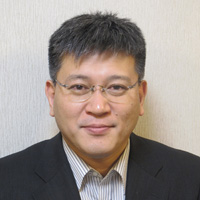
柳原広昌
13:50 - 14:10
Software Defined Media：視聴空間サービスのソフトウェア制御
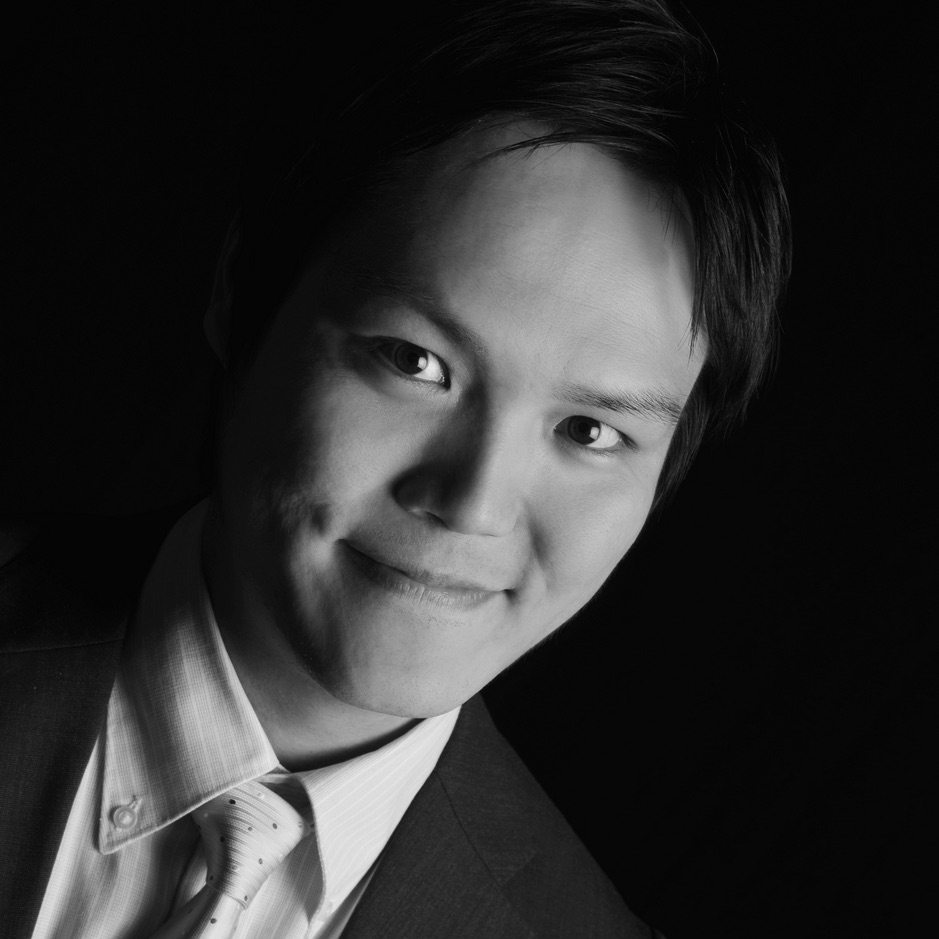
塚田 学
14:10 - 14:20
欧州人気Sportsで始まったDolby Live中継（IPTV）
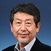
大沢幸弘
休憩・デモンストレーション展示の見学 （14:10 - 14:40）
14:40 - 16:30 (110分)
パネル討論（モデレータ：江崎・砂原）
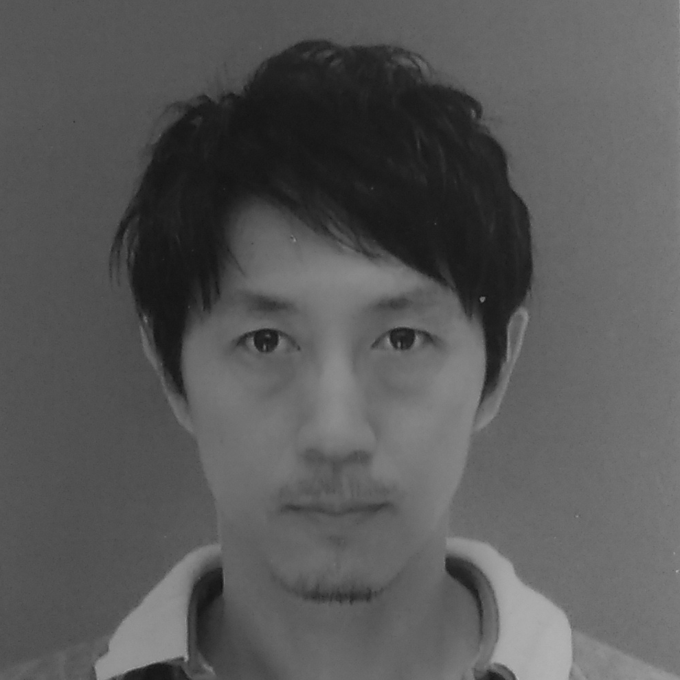
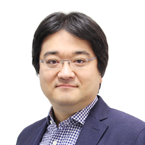
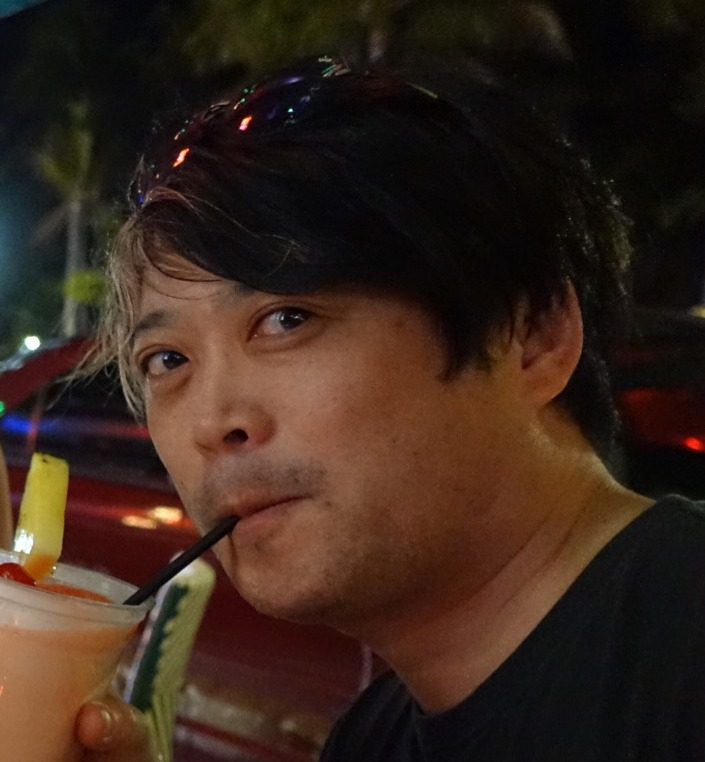
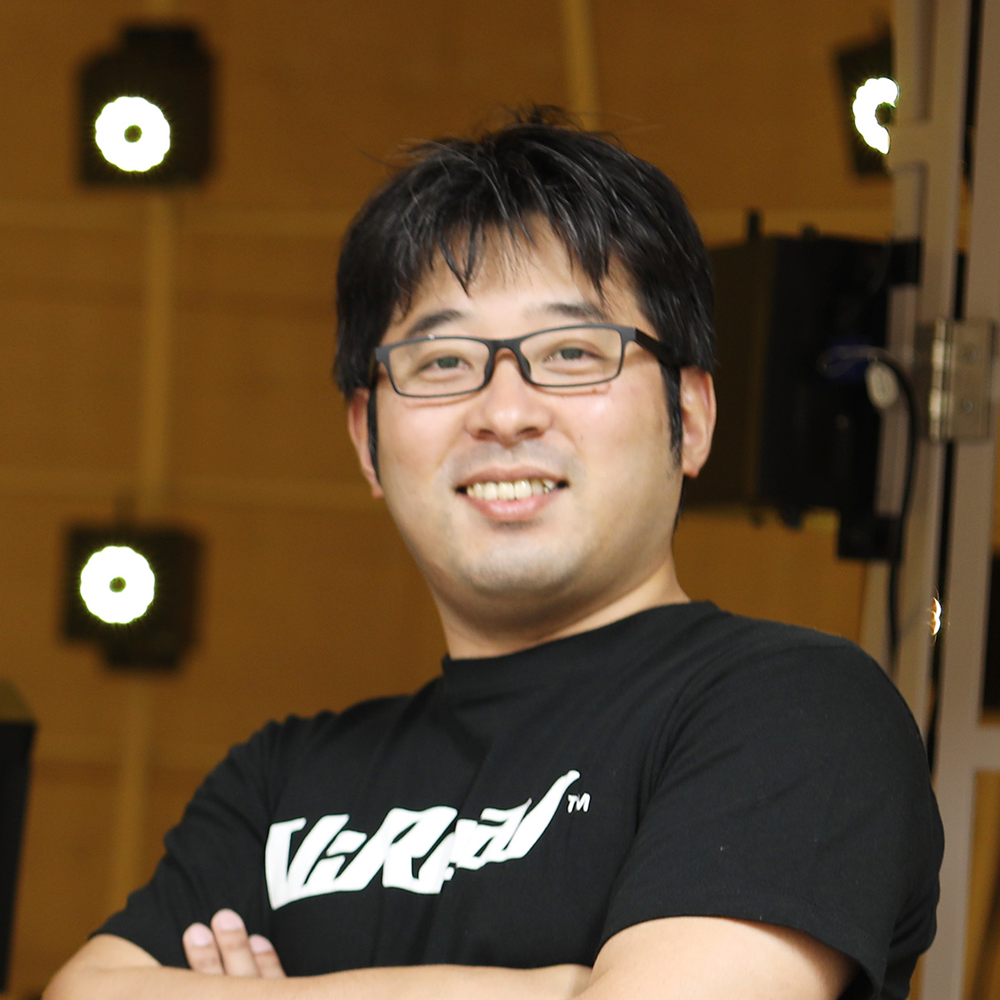
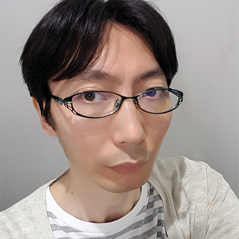
16:30 - 17:00
コメンテータのコメント・総括
17:00
閉会挨拶
江崎 浩（東京大学 情報理工学系研究科教授）
昭和 38 年生.昭和 62 年九州大学・工・ 電子修士課程了.同年 (株) 東芝入社.平 成 2 年米国ニュージャージ州ベルコア社. 平成 6 年コロンビア大学・客員研究員.平 成 10 年東京大学大型計算機センター・助 教授.平成 13 年同大学大学院・情報理工学系研究科・助教授.平成 17 年同大学大学院・同研究科・教 授,現在に至る.博士 (工学,東京大学).MPLS-JAPAN 代 表,IPv6 普及・高度化推進協議会専務理事,WIDE プロジェ クト代表,JPNIC 副理事長.
Home Page »
大沢幸弘 （ドルビージャパン株式会社 日本法人 代表取締役社長）
三井物産(株)にて情報産業ビジネス等に従事した後、2005年 米国Macromedia日本法人代表取締役社長に就任。その後、米国DivX, Inc.アジア総代表から、複数回の(被)買収を通じ、米国Sonic Solutionsアジア総代表(兼)日本法人代表取締役社長、米国Rovi CorporationのSVP APAC等を経て、2014年3月ドルビージャパン株式会社 代表取締役社長に就任。
東京生まれ 早稲田大学 (高等学院及び理工学部) 卒。
東京大学EMP (Executive Management Program) 修了 同EMP倶楽部前会長。
柳原広昌(KDDI総合研究所 メディアICT部門)
1988年、名古屋大学工学部電子工学科卒。
1990年、名古屋大学大学院修士課程修了。同年、KDD入社。
1997年より主に映像符号化伝送、映像編集加工処理、マルチメディアDBシステムに関する研究開発および技術開発に従事。
途中、PrimeCast, PreviewNavigator,SMIL Scenario Creator,QualityMeeting, MPEG Edit Studio Pro, MPEG Frame Finder,MPEG Archive Station, MP-Factoryなど数々のマルチメディア系ソフトウェア製品の開発に従事。
小澤英昭(NTTメディアインテリジェンス研究所・所長)
日本電信電話株式会社メディアインテリジェンス研究所所長。平成3年NTT入社後、同社ヒューマンインタフェース研究所、サイバーソリューション研究所にて、マルチメディア処理技術の研究実用化および(株)ウォーカープラスにて地域情報等のマルチメディア情報提供に従事。平成16年よりNTTレゾナントにおいて、gooの新規事業開拓、検索サービス、ヘルスケア等のネットサービスの開発、サービス運営を経て現職。平成25年5月より、Android/iOS向け関連ソフトウェア開発を行う子会社NTTレゾナントテクノロジーの代表取締役社長を兼務。平成4年慶應義塾大学理工学研究科博士課程修了。博士（工学）。
黒田 晴彦（デル株式会社 最高技術責任者（CTO） ）
2016年5月1日にデル株式会社 最高技術責任者に就任。デルおよびEMC日本法人が提供する技術及びエンド・ツー・エンドソリューションの展開を統括し、総合ITカンパニーとして日本市場におけるビジネス拡大の責務を担っています。黒田は、1980年に三井物産株式会社に入社。以後、36年間にわたり同社における要職を歴任してきました。欧州三井物産システム課General Manager（1998年）、経営改革推進部 IT戦略企画室長（2003年）を経て、2009年にIT推進部 副部長に就任しました。Chief IT Architectとして三井物産におけるシステム全体像のグランドデザイン(IT-Landscape)設計と構築を担当し、同社のIT活用拡大に貢献しました。また、アマゾンウェブサービス社、SAP社、マイクロソフト社などが日米欧等各地で開催するITユーザーコミュニティーのメンバーとして活躍しています。
水野拓宏（株式会社アルファコード 代表取締役社長 CEO 兼 CTO）
1974年生まれ。芝浦工業大学システム工学部電子情報システム学科卒。
株式会社ドワンゴで数々のゲームタイトルのネットワーク設計・システム設計を担当。同社でシステムアーキテクトとして数百万人規模のWebサービスのシステム設計を行う。
2006年、独立行政法人情報処理推進機構（IPA）により天才プログラマー／スーパークリエータに認定される。同年株式会社UEIへ入社、その後取締役副社長 兼 CTOを歴任。 2017年株式会社UEIより、子会社であった株式会社UEIソリューションズを「株式会社アルファコード」としてMBOし独立。代表取締役社長CEO兼CTOを現任。現在ではVRやスマートフォン向けの企画コンサルティングやサービス構築事業を柱に活動中。
個人活動：
■株式会社アルファコードについて
株式会社アルファコード »
横田 聡一郎（リコーICT研究所 フォト二クス研究センター エグゼクティブスペシャリスト）
1998 年4月1日に株式会社日立製作所入社。ETC車載器、DSRC車載器の通信系DSPなどの研究開発を行い実用製品化に従事しました。その後車載ステレオカ メラの処理FPGAや認識アルゴリズムの研究開発に従事し、製品実用化に貢献しました。
2009年4月1日に株式会社 リコー入社。カメラを利用した3次元処理の研究開発に広く従事し、デジタルカメラの高速オートフォーカス、
車載用３次元処理カメラ、FA用３次元カメラな どの製品化やドローン用の超広角３次元カメラの研究開発に貢献しました。
近年は、リコーThetaを発展させた全天球画像処理における３次元処理の研究開発に従事しています。
堤康一郎（株式会社バンダイナムコスタジオ 技術本部 技術企画部）
1998年株式会社ナムコ入社。バンダイナムコゲームス技術部門を経て、2012年よりバンダイナムコスタジオ所属。
製品開発プロジェクト向け技術支援全般に従事すると共に、先端技術R&D、グループ各社と連携してのオープンイノベーションプロジェクトに取り組む。
塚田 学（東京大学 情報理工学系研究科 特任助教）
1982年、京都生まれ．2005年慶應義塾大学環境情報学部卒業．2007年慶應義塾大学政策・メディア研究科修士取得．2007年よりフランス・パリ国立高等鉱業学校 (Mines ParisTech) ロボット工学センター博士課程在籍および、フランス国立情報学自動制御研究所 (INRIA)のIMARAチームにて研究員として勤務．2011年博士号取得． 現在は、東京大学 大学院 情報理工学系研究科の特任助教．2014年よりWIDEプロジェクトのボードメンバー． 自動車の情報化など、次世代インターネットIPv6における移動体通信に取り組む．
Home Page »
白木原太（ヤマハ株式会社 研究開発統括部 第１研究開発部 空間音響グループ）
2002年松下電器産業株式会社（現パナソニック株式会社）入社。オーディオ用システムLSIの開発に従事。その後、2006年にヤマハ株式会社入社。以来、空間音響処理の研究開発及び業務用音響機器の開発に従事。現在は主にVRや360°動画向けの立体音響の研究開発を行いつつ、ヤマハの立体音響技術"ViReal"のプロデューサーとして社外協業の推進を行っている。
川口貴志(CRI・ミドルウェア ゲーム事業推進部 オーディオリード)
ゲーム業界と音楽業界を半分ずつ経験してきた、エンジニア寄りのサウンドデザイナー、ディレクター。1998年よりゲーム会社、ネットベンチャー、音楽制作会社、フリーランスを経て2015年、CRIに入社。ゲームにおける音の演出ノウハウを活かし、主に音響デザインと触覚デザインの研究をしつつ、ミドルウェアのエヴァンジェリストとしてスマートフォンアプリ、VRコンテンツ、配信サービスなど体験の向上に努めている。
三浦文夫（関西大学社会学部メディア専攻教授）
1980年慶應義塾大学経済学部卒業、電通を経て2012年より現職。
radikoを考案、実用化。オーディオプラットフォームと音楽産業の基盤整備を推進。
radikoフェロー、アーティストコモンズ実証連絡会幹事、スペースシャワーネットワーク社外取締役、慶應義塾大学SFC研究所上席所員、関西大学音楽アーカイブ・ミュージアムプロジェクト代表、サイバー関西プロジェクト幹事、マルチスクリーン型放送研究会顧問、元民放連ラジオ再価値化研究グループ座長、民放連シェアラジオ推進部会特別委員、民放連ハイブリッド型ラジオ研究部会特別委員。
著書「インターネット世界への扉」（1995年マガジンハウス）、「デジタルコンテンツ革命」（1996年日本経済新聞社）、「少女時代と日本の音楽生態系」（2012年日経プレミアシリーズ）。
小金澤 剛康（イオンエンターテイメント株式会社 コンテンツ・プロモーション担当取締役）
2000年にシネマコンプレックス運営会社である株式会社ワーナー・マイカル（現イオンエンターテイメント株式会社）に入社し、
地方・新規劇場の映画館の支配人や本社マーケティング部、プロモーション本部などを担当する。
2017年からコンテンツ・プロモーション担当取締役。映画番組編成、映画コンテンツ開発、営業企画部門などを担当する。
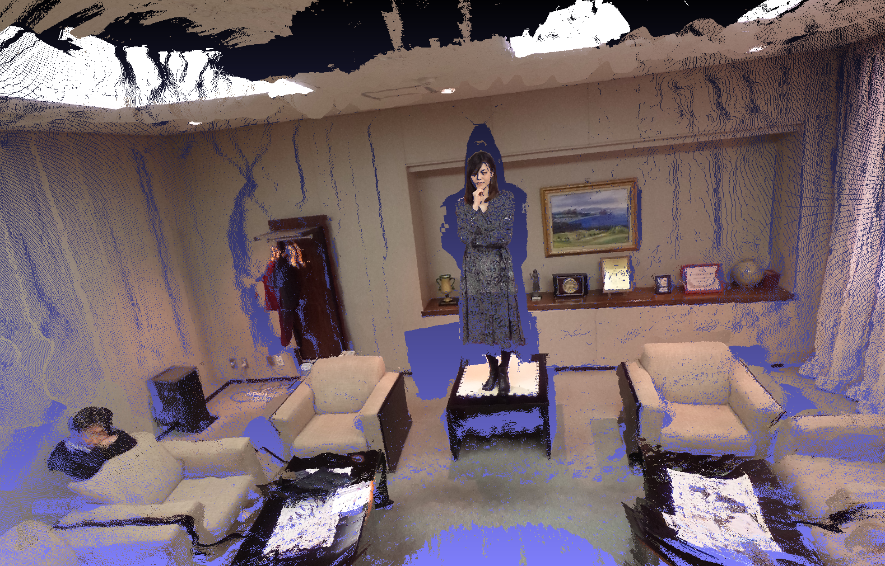RICOH THETAを活用した3D空間復元技術
リコーの全天球カメラRICOH THETAを活用した3D空間復元技術の開発を行っている。
今回は、復元した点群データの中を自由に動くことのできるVRアプリを作成した。
物を掴んで配置を変えたり、物の寸法を測ったりすることができ、3Dデータであることの効果を実感していただきたい。
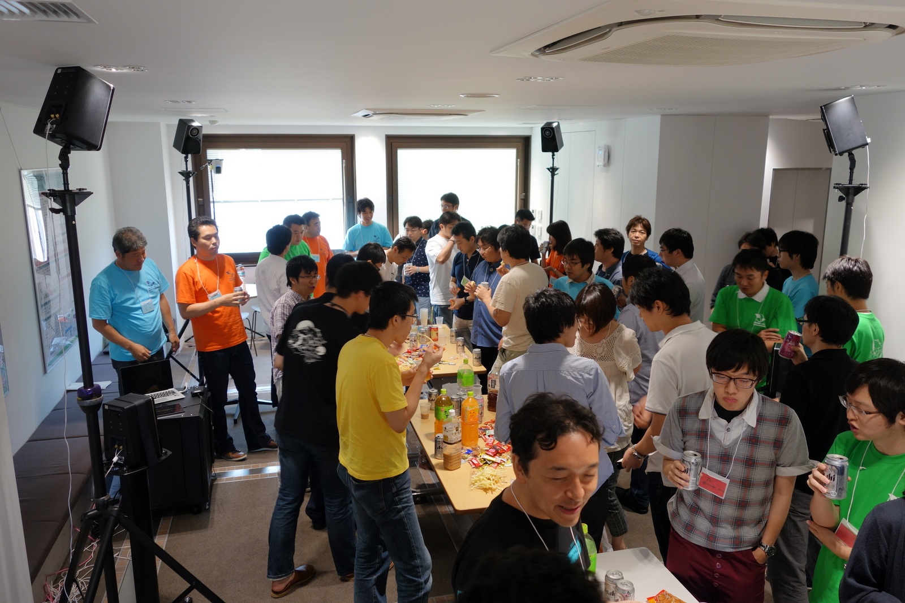SDM試作システム
SDMコンソーシアムでは東京大学 I-REF棟6階のヒロビーにて、SDMアーキテクチャに基づくSDM拠点の試作システムを構築している。過去2回開催したスマートライフハッカソンではAPIを公開し、参加者が試作システムの機能を利用した様々なアイデアを開発した。
Home Page »
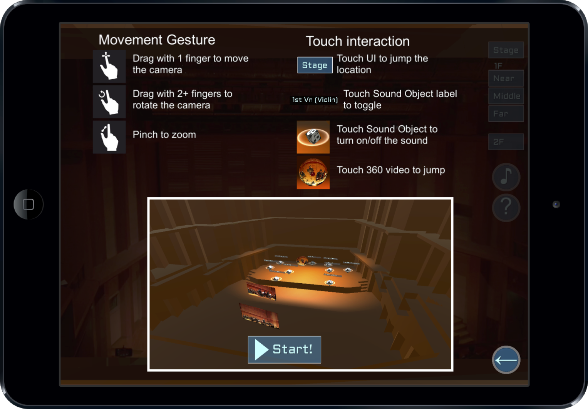SDM 3602
クラシックコンサートとジャスセッションのイベントを収録し，インタラクティブに自由視聴点での三次元映像音声を再生するアプリケーション「SDM3602 」を設計，実装し，評価を行なった．さらにビルボードジャパンが開催したLive Music HackasongにてSDM360Squareのデモンストレーションを行い，審査員と一般の来場者の投票により，優秀賞を受賞した．
Home Page »
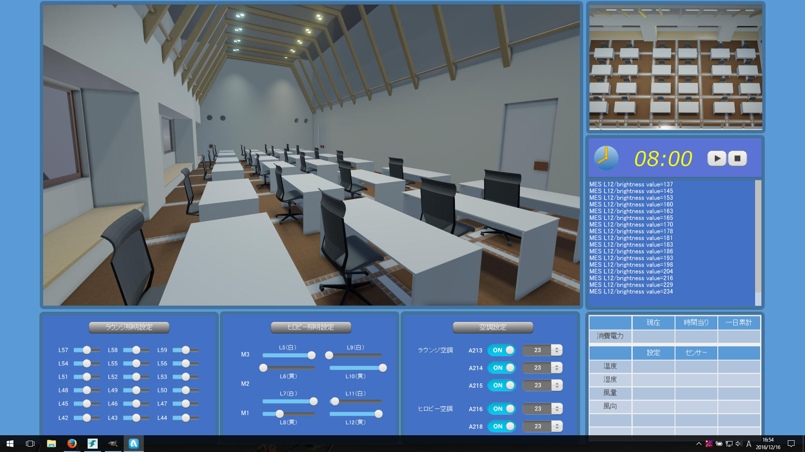I-REF棟ヒロビー制御システム
ハッカソンのアイデアを元にAutodeskのStingrayというゲームエンジンを用いて実装したI-REF棟の設備制御システム。会議スケジュールと連動して、ヒロビーの照明などが自動的に変化します。
VIDEO VRider DIRECT
スマホで撮影した360度VR映像を簡単に配信できるプラットホーム。
今まで専門的な知識が必要だったVRコンテンツ制作を、より身近に、誰でも日常的に作成・配信できるようにする事を主眼に置いた、CMS(コンテンツマネジメントシステム)。
再生アプリでは、VRコンテンツ内にURLリンクを配置する事ができ、VRコンテンツからwebサイトへの誘導を実現。既存webコンテンツとの連携によるVRの普及に期待。
VR内への匂いの配置にも対応。
Home Page »
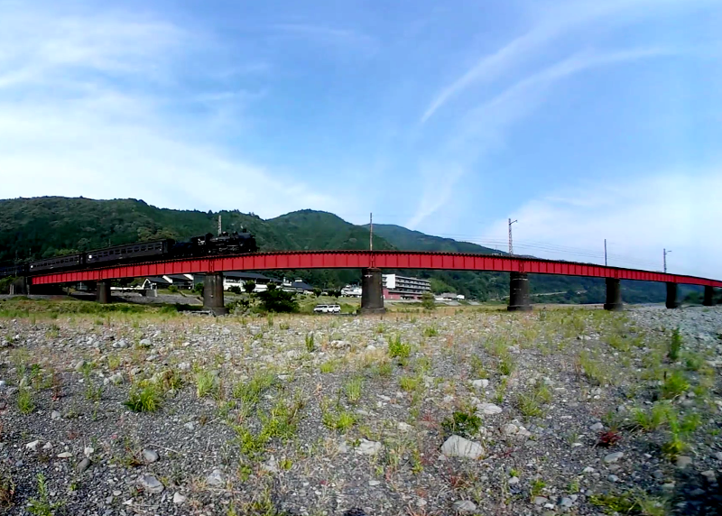ViReal Mic & Headphone
立体音響を手軽に収録できる64chワンポイントマイクロフォン『ViReal Mic』を使用して全天周の音を収録。
さらに『ViReal Headphone』の技術でヘッドフォンで手軽に体験できるVRコンテンツを制作しました。
大井川鐵道で今も現役のSLが走る様子を、360°動画とヘッドフォン立体音響でお楽しみください。
2016年7月29日に東京大学 I-REF棟6Fにて開催されたSDMシンポジウム2016では、産学から5名のゲストスピーカを招き活発な意見交換をしました。また最新技術のデモンストレーション展示も行われました。
2014年1月から、オブジェクト志向のディジタルメディアと，ネイティブ・ディジタルなインターネット環境が前提の映像・音響空間を用いたビジネス創造を目指し，東京大学，慶應義塾大学，ヤマハ株式会社，KDDI研究所，パナソニック，日本ドルビー，NTT研究所などのメンバーが集まり，Software Defined Media (SDM) ワーキンググループ(WG)を設立し，コンソーシアムとして活動しております．
 SDMシンポジウム2017
SDMシンポジウム2017


{kind=link}
{kind=link}
{kind=link}
{kind=link}
{kind=link}
{kind=link}